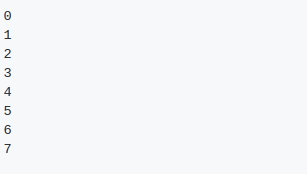

Output (Python 2.7- Python 3.5):
이것은 정확히 8번 작동하고 멈춥니다.
설명:
동시에 편집하는 Dictionary의 반복은 지원되지 않습니다.
Dictionary가 키를 더 보유하도록 크기를 조정하는 시점이기 때문에 8번 실행합니다(삭제 항목이 8개 있으므로 크기 조정 필요). 이것은 실제로 구현 세부 사항입니다.
삭제된 키를 처리하는 방법과 크기 조정은 Python 구현마다 다를 수 있습니다.
자세한 내용은 유사한 예를 자세히 설명하는 StackOverflow 스레드를 참조하십시오.